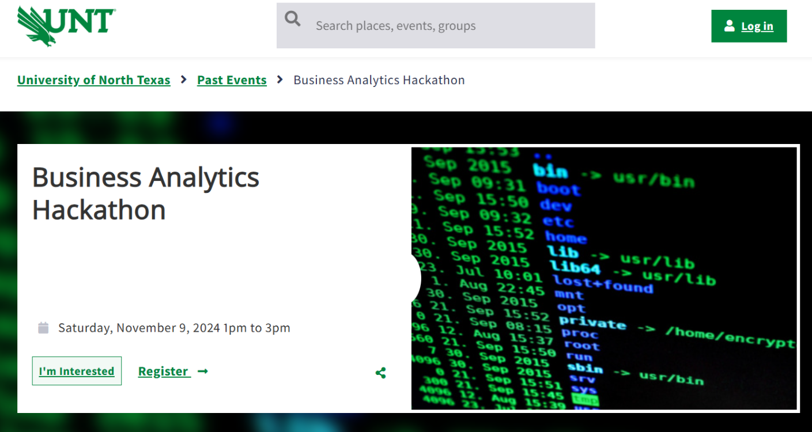
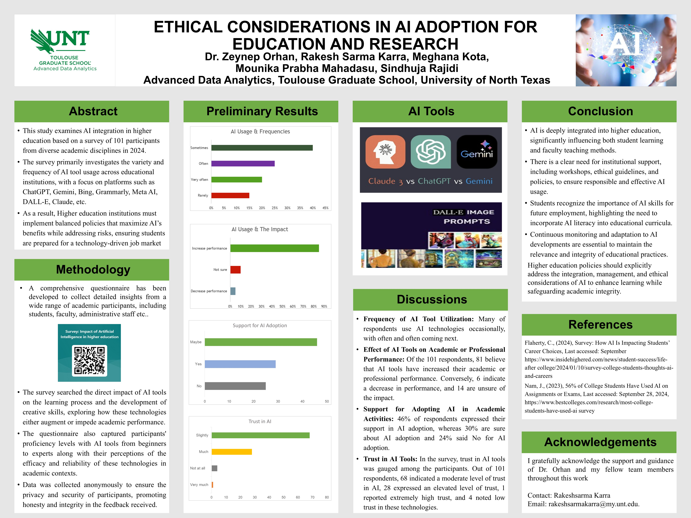
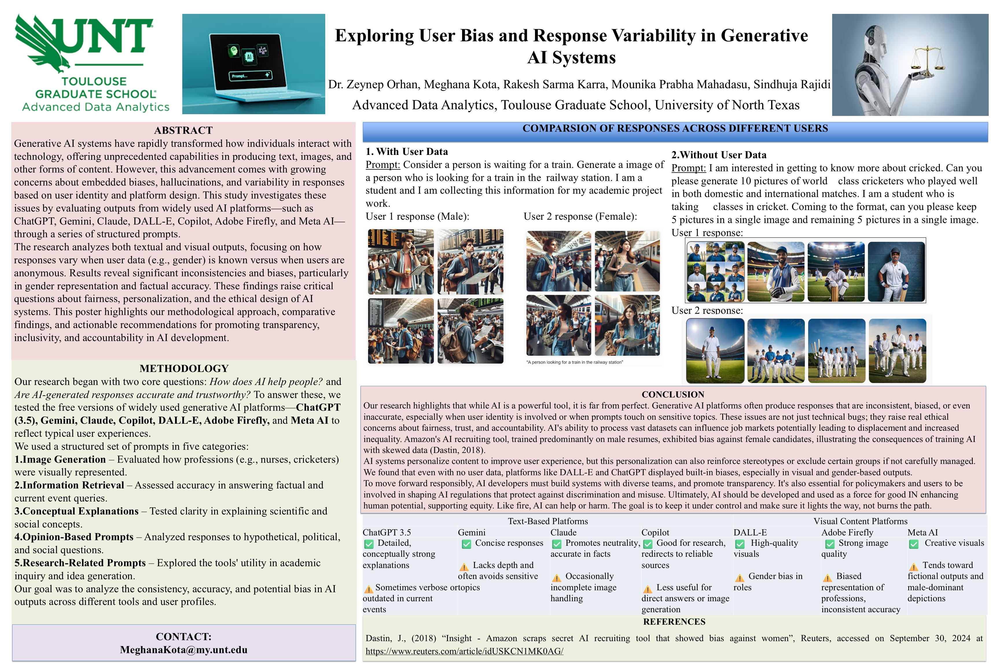
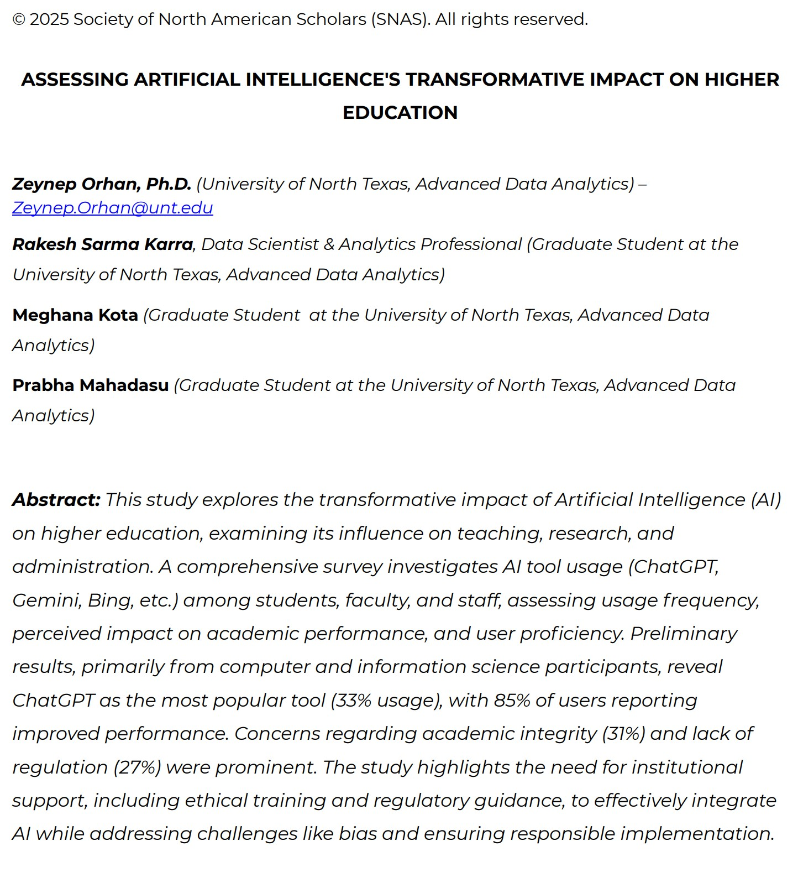
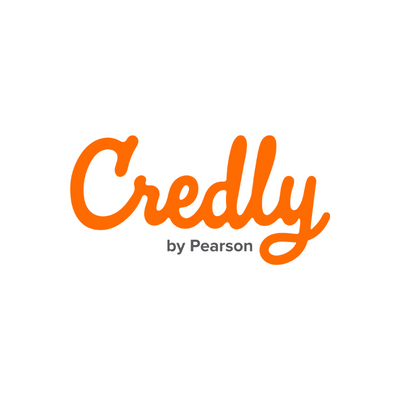
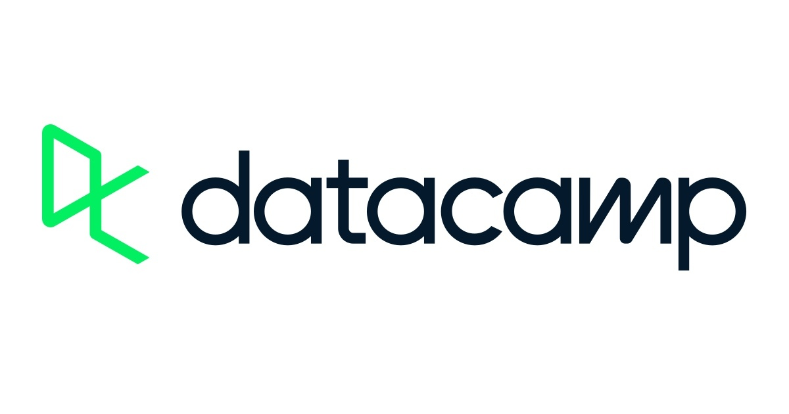

Python
Python
 R
R
 SQL
SQL
 SAS
SAS
 Jupyter
Jupyter
 Scikit-learn
Scikit-learn
 PyTorch
PyTorch
 TensorFlow
TensorFlow
 Hugging Face
Hugging Face
 MLflow
MLflow
 Hypothesis Tests
Hypothesis Tests
 A/B Testing
A/B Testing
 Segmentation
Segmentation
 Experimental Design
Experimental Design
 Causality
Causality
 Spark
PySpark
Spark
PySpark
 Airflow
Airflow
 Databricks
Databricks
 dbt
dbt
 DagsHub
DagsHub
 Docker
Docker
 Kubernetes
Kubernetes
 Heroku
Heroku
 GCP
GCP
 Snowflake
Snowflake
 PostgreSQL
PostgreSQL
 Power BI
Power BI
 Tableau
Plotly
Tableau
Plotly
 Streamlit
Streamlit
 Looker Studio
Looker Studio
 Dashboards
Dashboards
 Git
Git
 GitHub
GitHub
 Bitbucket
Bitbucket
 Jira
Jira
 Confluence
Confluence

Built an XGBoost engagement model (ROC-AUC 0.76) with SHAP insights and KPIs to guide targeted outreach and quantify business impact for Medicare Advantage members.

Developed a multiclass XGBoost model to predict heavy-duty truck warranty cost segments from configuration and claims data, improving macro ROC–AUC to 0.80 and surfacing high‑risk option bundles for design and pricing decisions.

Developed ML-based features and prototypes to analyze customer travel behavior and surface actionable insights for destination recommendation and operational planning.

Built a model in R to streamline the teaching assistant selection process, evaluating over 1,200 applications and assigning probability scores to identify top candidates.

Built an end-to-end classification pipeline on SpaceX launch data, including API/web scraping, SQL and Python-based EDA, feature engineering, and model evaluation to predict Falcon 9 landing success and support reusable-rocket cost optimization.

Led an end-to-end project management capstone to design and plan the AHI Marketing Data App, replacing fragmented, manual market-tracking processes with a single real-time decision support application.

Designed an interactive Tableau dashboard on Pantawid Indigenous Peoples MCCT data to profile beneficiaries by region, age, and gender, highlight underserved provinces, and surface insights for program coverage, education, and healthcare planning.



Education

Built a strong foundation in statistical learning, machine learning, data systems, and applied analytics through industry-oriented coursework and project-based problem solving.
Relevant Coursework
Certifications

AWS Certified AI Practitioner
Amazon Web Services
Validates foundational knowledge in AI, machine learning concepts, and responsible AI on AWS.
View Credential
Databricks Certification
Databricks
Demonstrates applied capability in modern data engineering, analytics workflows, and scalable data platforms.

AI Facilitated Learning Network - THECB
Professional Development Program
Focused on applied AI learning, modern AI workflows, and practical integration of intelligent systems.
View Credential
UNT AI Fundamentals
University of North Texas
Strengthened core understanding of AI principles, foundational concepts, and responsible use of AI technologies.

IBM Data Science Professional Certificate
IBM · Coursera
Built hands-on foundations in Python, SQL, data analysis, visualization, machine learning, and real-world data science workflows.

Cloud Computing Professional
Coursera
Built practical skills in cloud concepts, virtual machines, containers, storage, networking, and application deployment.


Interactive dashboards and visual analytics projects showcasing storytelling with data.
View Profile
Verified badges and credential achievements across cloud, analytics, and AI learning.
View ProfileCompleted courses and specializations in machine learning, data science, and cloud topics.
View Profile
Hands-on learning, projects, and portfolio-based practice in Python, SQL, and analytics.
View Profile
Assistant Vice President Product Management - RBL Bank
“I highly recommend Rakesh Karra for his strong SQL skills and superb understanding of data analysis. He is very proficient in handling large datasets, writing efficient queries, and converting raw data into meaningful insights that support business decisions.” We have worked togerher and collaborated on various projects.”
Recommendation, March 14, 2026
Senior Business Analyst - Citi Bank
“I had the privilege of working with Rakesh on AML and financial crime analytics initiatives, where he consistently demonstrated strong expertise in transaction monitoring, KYC controls, and regulatory expectations aligned with global AML regulatory standards. He has a strong understanding of risk-based AML frameworks, effectively connecting KYC quality, transaction monitoring, and investigative outcomes to strengthen overall financial crime controls.
Rakesh combines analytical depth with strong technical capability, working confidently with large datasets to refine monitoring scenarios and enhance the detection of suspicious activity. His proactive mindset and focus on improving monitoring effectiveness make him a valuable asset to any financial crime or compliance team.”
Recommendation, March 07, 2026

Senior Associate Data Governance - JPMorgan Chase
“I had the pleasure of working with Rakesh and consistently found him to be dependable, detail-oriented, and proactive in his approach. He communicates clearly, collaborates well, and takes ownership of his responsibilities. Rakesh would be a strong asset to any team he joins.”
Recommendation, January 30, 2026

Data Scientist Principal – Lockheed Martin
“I had the privilege of collaborating with Rakesh Sharma during his position as my teaching assistant for two graduate-level courses in the Department of Advanced Data Analytics at the University of North Texas. Rakesh was selected from a highly competitive pool of candidates, which underscores both his extensive knowledge in data analytics and his exceptional interpersonal skills.
His contributions were invaluable; he played a crucial role in researching course content, organizing materials, developing assessments, and providing insightful feedback. Rakesh approached his responsibilities with enthusiasm and consistently surpassed my expectations. His positive attitude and effective communication skills—both verbal and written—greatly enhanced the learning environment.
Rakesh has shown kindness and encouragement to students who seek his assistance, and he is always willing to share his experiences with fellow teaching assistants. Given his outstanding performance as my TA, his proven track record in previous roles, and his dedication to continuous learning, I am confident that he will be a significant asset to your organization.”
Recommendation, November 8, 2024